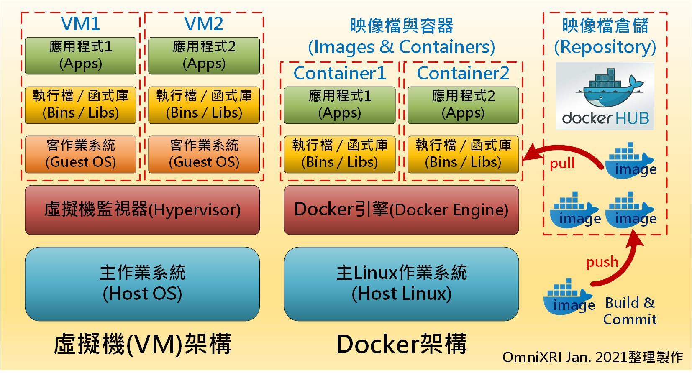

Install Open Vino on MacOS
Table of Contents
1 Github
- 參考: openvinotoolkit / openvino_notebooks
Create and activate a Virtual Environment
1: conda create --name openvino_env 2: conda activate openvino_env
Clone the Repository
1: cd ~/Desktop 2: git clone https://github.com/openvinotoolkit/openvino_notebooks.git 3: cd ~/Desktop/openvino_notebooks
Install the Packages
1: python -m pip install --upgrade pip 2: pip install -r requirements.txt
結果: 安裝openvino-dev時失敗
1: Collecting openvino==2021.4.0 2: Using cached openvino-2021.4.0-3839-cp39-cp39-macosx_10_15_x86_64.whl (25.8 MB) 3: ERROR: Cannot install openvino-dev[onnx,tensorflow2]==2021.4.0, openvino-dev[onnx,tensorflow2]==2021.4.1 and openvino-dev[onnx,tensorflow2]==2021.4.2 because these package versions have conflicting dependencies. 4: 5: The conflict is caused by: 6: openvino-dev[onnx,tensorflow2] 2021.4.2 depends on tensorflow~=2.4.1; extra == "tensorflow2" 7: openvino-dev[onnx,tensorflow2] 2021.4.1 depends on tensorflow~=2.4.1; extra == "tensorflow2" 8: openvino-dev[onnx,tensorflow2] 2021.4.0 depends on tensorflow~=2.4.1; extra == "tensorflow2" 9: 10: To fix this you could try to: 11: 1. loosen the range of package versions you've specified 12: 2. remove package versions to allow pip attempt to solve the dependency conflict
- 修正原本的requirements.txt
刪除第一行 Install Intel® Distribution of OpenVINO™ toolkit from Anaconda Cloud
https://docs.openvino.ai/2021.3/openvino_docs_install_guides_installing_openvino_conda.html
1: conda install openvino-ie4py -c intelInstall the virtualenv Kernel in Jupyter
1: python -m ipykernel install --user --name openvino_envLaunch the Notebooks!
To launch a single notebook, like the Monodepth notebook
1: jupyter notebook notebooks/201-vision-monodepth/201-vision-monodepth.ipynbTo launch all notebooks in Jupyter Lab
1: jupyter lab notebooksIn Jupyter Lab, select a notebook from the file browser using the left sidebar. Each notebook is located in a subdirectory within the notebooks directory.
1.1 conda基本語法
1.1.1 檢查目前環境
1: conda env list
# conda environments: # base * /Users/letranger/opt/anaconda3 ai4y /Users/letranger/opt/anaconda3/envs/ai4y myEnv /Users/letranger/opt/anaconda3/envs/myEnv
1.1.2 建立新環境
1: conda create --name myEnv python=3.7
WARNING: A conda environment already exists at '/Users/letranger/opt/anaconda3/envs/myEnv' Remove existing environment (y/[n])?
1.1.3 啟動虛擬環境
1: activate myEnv
1.1.4 刪除虛擬環境
1: conda remove --name myEnv
2 localhost
- Install cmake
- 東西在 NAS
- 東西在 NAS
Add /Applications/CMake.app/Contents/bin to path (for default install)
edit .bashrc file,加入
1: export PATH="/Applications/CMake.app/Contents/bin:$PATH"
- Install openvino tool kit
- NAS
- NAS
vi ~/.bash_profile
加入
1: source /opt/intel/openvino_2021/bin/setupvars.sh
Configure the Model Optimizer¶
1: cd /opt/intel/openvino_2021/deployment_tools/model_optimizer/install_prerequisites 2: sudo ./install_prerequisites.sh
Upgrade PyYAML
1: sudo -H pip3 install --ignore-installed PyYAML
Testing
1: cd /opt/intel/openvino_2021/deployment_tools/demo 2: sh demo_benchmark_app.sh 3: sh demo_security_barrier_camera.sh 4: sh demo_squeezenet_download_convert_run.sh
- Install cv2
1: pip3 install --user opencv-pythonCollecting opencv-python Using cached https://files.pythonhosted.org/packages/8b/9f/879a48a4d4361d1784728be8543f5c8b2b681db500c9e6854f0654645c3d/opencv_python-4.5.4.58-cp37-cp37m-macosx_10_15_x86_64.whl Collecting numpy>=1.14.5 (from opencv-python) Using cached https://files.pythonhosted.org/packages/5d/e4/1178a2e82d1c9abd696496d4f0fc2d09e346b43101829e08eb3ee558fd5d/numpy-1.21.4-cp37-cp37m-macosx_10_9_x86_64.whl Installing collected packages: numpy, opencv-python Successfully installed numpy-1.21.4 opencv-python-4.5.4.58
- Install cv2
copy openvino to site_package
1: cd /Users/letranger/opt/anaconda3/lib/python3.8/site-packages 2: cp -r /opt/intel/openvino_2021.4.689/python/python3.8/openvino .
3 Docker
3.1 Introduction
- 一般大家買來的電腦上大部份都是安裝微軟的Windows作業系統，如果遇到要開發Liunx相關應用程式時，可能有人會選擇安裝二個作業系統，在重新開機時選擇要執行那一種。雖然這種方式可完全掌控硬體資源（如CPU, GPU, HDD, RAM）及開發環境（相依套件、函式庫），但每次切換作業系統都要重新開機，實在太麻煩。
- 為解決這個問題，於是就有人提出在主作業系統(Host OS)上安裝一個虛擬機(Virtual Machine, VM)監視器(Hypervisor)，如VMWare, VirtualBox這類工具，方便安裝其它作業系統或者多種不同的開發環境，如Fig. 1左圖所示。雖然這樣很方便同時使用兩種以上作業環境，但硬體資源要和主系統共享且額外多了一些虛擬化轉換工作，所以執行效能較差，甚至有些硬體（如GPU）無法直接使用，導致部份應用程式無法運作。
- 很多在Linux環境下開發程式的人都知道，它的應用程式比較不像在Windows下一個執行檔(.exe)或搭配幾個動態函式庫(.dll)就能順利執行，各種開發工具及相依套件包常會有版本不相容問題。本來在Linux上也可以執行虛擬機(VM)來區隔不同開發環境，但效能實在太差，所以便有人開發出以一種類似大船載送貨櫃，貨櫃裝載各種不同大小、形狀貨物的執行環境，稱為Docker。
- 如圖1所示，容器(Containers)就像貨櫃是用來裝載映像檔(Images)這樣的貨物，再由Docker引擎（大船承載）執行的概念。表面上看起來和VM沒什麼不同，但最大差別就是它很輕量，不透過虛擬化，直接驅動硬體資源，共用作業系統資源，所以啟用一個容器和映像檔僅須數秒和載入一個VM客作業系統核心要數分鐘差異頗大。以往Docker只能在Linux上運作，近年來已有支援Window及Mac OS的版本出現了。
- 一般Docker使用上極為方便，供應商僅需將欲提供的映像檔(Images)推上(Push) 公開映像檔倉儲(Repository / Docker Hub)，使用者再去拉下(Pull)想要的映像檔即可執行，如圖1右圖所示。

Figure 1: VM和Docker架構差異比較圖。(OmniXRI, Jan. 2021整理製作)
3.2 Install Docker
Install Docker on Mac
1: brew install --cask --appdir=/Applications docker==> Downloading https://desktop.docker.com/mac/main/amd64/70708/Docker.dmg ==> Installing Cask docker ==> Moving App 'Docker.app' to '/Applications/Docker.app' ==> Linking Binary 'docker-compose.bash-completion' to '/usr/local/etc/bash_completion.d/docker-compose' ==> Linking Binary 'docker.zsh-completion' to '/usr/local/share/zsh/site-functions/_docker' ==> Linking Binary 'docker.fish-completion' to '/usr/local/share/fish/vendor_completions.d/docker.fish' ==> Linking Binary 'docker-compose.fish-completion' to '/usr/local/share/fish/vendor_completions.d/docker-compose.fish' ==> Linking Binary 'docker-compose.zsh-completion' to '/usr/local/share/zsh/site-functions/_docker_compose' ==> Linking Binary 'docker.bash-completion' to '/usr/local/etc/bash_completion.d/docker' 🍺 docker was successfully installed!
- Pull from Github
3.3 Testing Docker
1: docker run hello-world
由於第一次執行，本機端並沒hello-world這個映像檔，所以會自動到Docker Hub去找，並下載回來。如果成功會看到下面畫面。
3.4 使用 Docker 安裝 OpenVINO
- Intel OpenVINO 對應不同操作系統(Windows, Linux, macOS, RaspbianOS)提供很多種安裝方式。近年來隨著各種容器技術興起，也開始支持像 Docker 這類直接安裝映像方式，充份解決用戶不熟悉安裝步驟及滿足開發者需要不同版本或開發環境隔離需求。
- Intel OpenVINO 目前在 Docker Hub 上提供了多個映像讓使用者下載(pull)，其中有兩組使用率較高，openvino/workbench 用戶不需編程，直接操作圖型化接口就可測試各種模型的效率，openvino/ubuntu18_dev 則提供一般 Ubuntu 18.04 (Linux) 開發環境。
- 首先執行下列指令將映像文件 openvino/ubuntu18_dev 從 Docker Hub 拉下（下載）至本機端。由於文件數量較多且較大（解壓縮後約 7.22GByte），所以根據網絡速度可能需要等待數分鐘到數十分鍾不等。
3.4.1 下載、執行image
1: docker pull openvino/ubuntu18_dev
若想啟動映像文件，根據不同硬件執行下列命令。
- Intel CPU
1: docker run -it --rm openvino/ubuntu18_dev
- Intel GPU
1: docker run -it --rm --device /dev/dri openvino/ubuntu18_dev
- NCS2（單個 VPU）
1: docker run -it --rm --device-cgroup-rule='c 189:* rmw' -v /dev/bus/usb:/dev/bus/usb openvino/ubuntu18_dev
- HDDL（多個 VPU）
1: docker run -it --rm --device=/dev/ion:/dev/ion -v /var/tmp:/var/tmp openvino/ubuntu18_dev
3.5 Docker常用指令
docker info
1: docker infoClient: Context: default Debug Mode: false Plugins: buildx: Build with BuildKit (Docker Inc., v0.6.3) compose: Docker Compose (Docker Inc., v2.1.1) scan: Docker Scan (Docker Inc., 0.9.0) Server: Containers: 4 Running: 1 Paused: 0 Stopped: 3 Images: 3 Server Version: 20.10.10 Storage Driver: overlay2 Backing Filesystem: extfs Supports d_type: true Native Overlay Diff: true userxattr: false Logging Driver: json-file Cgroup Driver: cgroupfs Cgroup Version: 1 Plugins: Volume: local Network: bridge host ipvlan macvlan null overlay Log: awslogs fluentd gcplogs gelf journald json-file local logentries splunk syslog Swarm: inactive Runtimes: io.containerd.runc.v2 io.containerd.runtime.v1.linux runc Default Runtime: runc Init Binary: docker-init containerd version: 5b46e404f6b9f661a205e28d59c982d3634148f8 runc version: v1.0.2-0-g52b36a2 init version: de40ad0 Security Options: seccomp Profile: default Kernel Version: 5.10.47-linuxkit Operating System: Docker Desktop OSType: linux Architecture: x86_64 CPUs: 6 Total Memory: 1.939GiB Name: docker-desktop ID: L33G:3G5F:HIHY:FWNH:25ZM:DU35:IH2S:K4AD:6VKJ:UL3Z:IBW4:ZZY7 Docker Root Dir: /var/lib/docker Debug Mode: false HTTP Proxy: http.docker.internal:3128 HTTPS Proxy: http.docker.internal:3128 Registry: https://index.docker.io/v1/ Labels: Experimental: false Insecure Registries: 127.0.0.0/8 Live Restore Enabled: false- docker pull xxxxx
從Docker Hub拉下（下載）映像檔 [映像檔名稱xxxxx] docker images
檢查目前已下載之映像檔
1: docker imagesREPOSITORY TAG IMAGE ID CREATED SIZE openvino/ubuntu18_dev latest 5909980b90ae 8 days ago 5.63GB docker/getting-started latest eb9194091564 9 days ago 28.5MB hello-world latest feb5d9fea6a5 8 weeks ago 13.3kB
docker ps
檢查目前正在執行的container
1: docker psCONTAINER ID IMAGE COMMAND CREATED STATUS PORTS NAMES 29c22b186088 openvino/ubuntu18_dev "/bin/bash" 9 hours ago Up 9 hours compassionate_heyrovsky
docker ps -a
查看所有的container
1: docker ps -aCONTAINER ID IMAGE COMMAND CREATED STATUS PORTS NAMES 7ce134ba2f64 hello-world "/hello" 16 minutes ago Exited (0) 16 minutes ago lucid_sinoussi 29c22b186088 openvino/ubuntu18_dev "/bin/bash" 9 hours ago Up 9 hours compassionate_heyrovsky 43ae292225cb docker/getting-started "/docker-entrypoint.…" 24 hours ago Created charming_hofstadter 07b136cc7716 docker/getting-started "/docker-entrypoint.…" 24 hours ago Exited (0) 14 minutes ago goofy_goldwasser
docker start [Container ID]
啟動docker container
1: docker start 07b136cc7716 2: docker ps
07b136cc7716 CONTAINER ID IMAGE COMMAND CREATED STATUS PORTS NAMES 29c22b186088 openvino/ubuntu18_dev "/bin/bash" 9 hours ago Up 9 hours compassionate_heyrovsky 07b136cc7716 docker/getting-started "/docker-entrypoint.…" 24 hours ago Up 13 seconds 0.0.0.0:80->80/tcp goofy_goldwasser
docker stop [Container ID]
停止執行Container
1: docker stop 07b136cc771607b136cc7716
docker rm [Container DI]
刪除Container
1: docker rm 7ce134ba2f64 2: docker ps -a
7ce134ba2f64 CONTAINER ID IMAGE COMMAND CREATED STATUS PORTS NAMES 29c22b186088 openvino/ubuntu18_dev "/bin/bash" 11 hours ago Up 11 hours compassionate_heyrovsky 43ae292225cb docker/getting-started "/docker-entrypoint.…" 26 hours ago Created charming_hofstadter
- docker rmi [Image ID]
刪除 image, 刪除 image 前必需將透過該 image 所產生的 container 移除 docker container ls
List containers
1: docker container ls
CONTAINER ID IMAGE COMMAND CREATED STATUS PORTS NAMES 29c22b186088 openvino/ubuntu18_dev "/bin/bash" 9 hours ago Up 9 hours compassionate_heyrovsky
3.6 利用公開模型 MobileNet 執行圖像分類
利用 Docker 安裝好OpenVINO 工作環境後就可以開始進行推理(Inference)工作了。OpenVINO 除了提供多種預訓練好的模型外[11]，另外也支持很多不同框架 (Caffe/Caffe2, PyTorch, TensorFlow, MXNet, ONNX 等)產生的公開模型[12]，也稱為「Open Model Zoo」，其中包含圖像分類、對象偵測、圖像分割、人臉識別、人體 姿態、深度估測、圖像填補、風格轉移、動作識別、圖像著色、聲音分類、語音 識別、圖像翻譯等公開模型。
使用這些模型前須先下載並執行優化，最後產生 OpenVINO 推理時所需的中間表示文件(Intermediate Representation, IR)，即模型描述文件(.xml)及參數權重文件(.bin)，存放在/opt/intel/openvino/public/模型名稱/FP16(或 FP32, INT8)路徑下。
3.7 mobilenet 圖像分類
3.7.1 下載openvion docker image
啟動 Docker 並指定映像在 Intel CPU 上執行，以 root 身份執行，同時指令顯示器和系統共享，方便 OpenCV 執行imshow()能正常工作
1: docker run -itu root:root --rm -v /tmp/.X11-unix:/tmp/.X11-unix -e DISPLAY=$DISPLAY openvino/ubuntu18_dev
3.7.2 下載模型
1: python3 /opt/intel/openvino/deployment_tools/tools/model_downloader/downloader.py --name mobilenet-v1-1.0-224
3.7.3 優化模型
優化mobilenet-v1-1.0-224 並產出中間表示(*.xml, *.bin)文件，FP16/FP32 格式於 /opt/intel/openvino/deployment_tools/public/模型名稱路徑下
1: python3 /opt/intel/openvino/deployment_tools/tools/model_downloader/converter.py --name mobilenet-v1-1.0-224
3.7.4 輸入圖片，測試推理
1: python3 /opt/intel/openvino/inference_engine/samples/python/classification_sample_async/classification_sample_async.py -m /opt/intel/openvino/public/mobilenet-v1-1.0-224/FP16/mobilenet-v1-1.0-224.xml -i /opt/intel/openvino/deployment_tools/demo/car.png --labels /opt/intel/openvino/deployment_tools/demo/squeezenet1.1.labels
3.7.5 換成其他汽車圖片
- 切換到host下載圖片, ~/Downloads/pickup.jpg
查詢container ID
1: docker psCONTAINER ID IMAGE COMMAND CREATED STATUS PORTS NAMES 29c22b186088 openvino/ubuntu18_dev "/bin/bash" 9 hours ago Up 9 hours compassionate_heyrovsky 07b136cc7716 docker/getting-started "/docker-entrypoint.…" 23 hours ago Up 23 hours 0.0.0.0:80->80/tcp goofy_goldwasser
將下載的圖片複製到container中
1: docker cp ~/Downloads/pickup.jpg 29c22b186088:/opt/intel/openvino/deployment_tools/demo
- 重新測試推理
3.8 Docker References
4 Uninstallation OpenVino on Mac
執行openvino_toolkit_uninstaller.app:
1: /opt/intel/openvino_2021